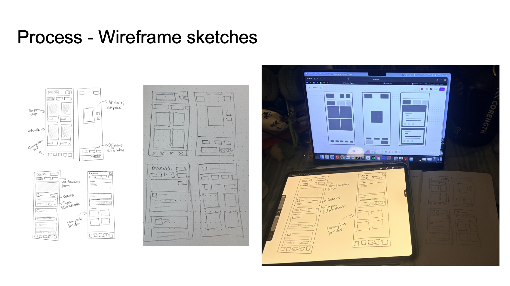
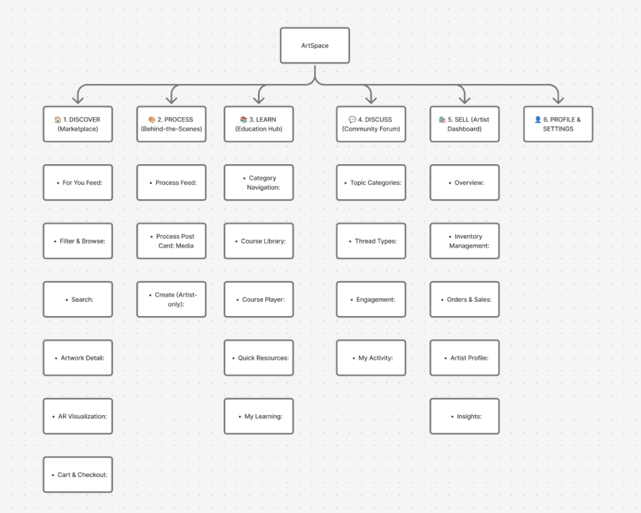
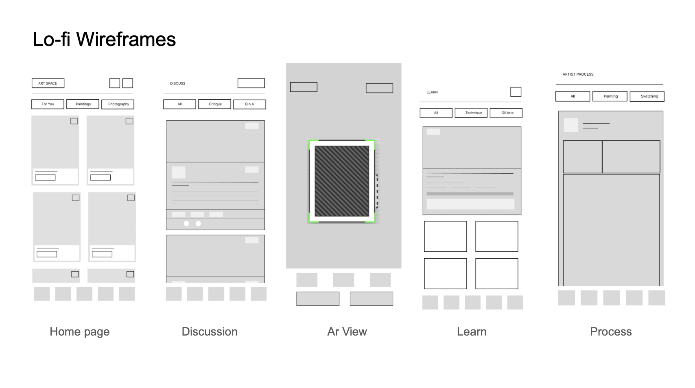
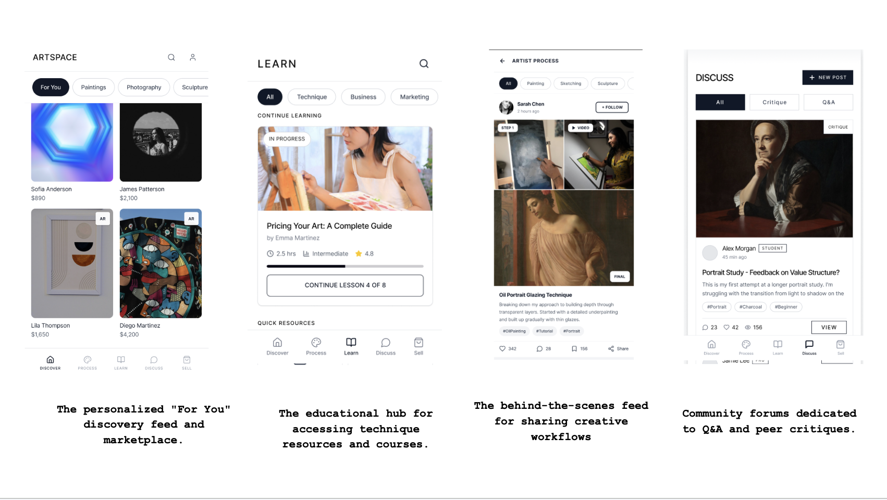

ArtSpace: Holistic Art Community Ecosystem
Project Overview
ArtSpace is a comprehensive mobile platform that transforms how artists connect, grow, and sell their work by merging marketplace functionality with community learning and immersive technology. This multi-sided ecosystem empowers emerging artists to build sustainable practices while giving collectors the confidence and knowledge to invest in art authentically.
The Problem
The application addresses a critical gap in the art world. While digital platforms excel at art discovery, they fail to bridge the confidence gap between viewing art online and making purchase decisions for physical spaces.
The Solution
By integrating Augmented Reality visualization, ArtSpace allows potential buyers to see pieces at the proper scale on their own walls before committing to a purchase. Beyond commerce, the app functions as a creative hub where artists can share their processes, access educational resources, and engage in meaningful discussion with peers.
Core Features
- Discover: A personalized marketplace designed to browse artwork by medium, style, and physical dimensions.
- AR View: An augmented reality tool to visualize art pieces in real-world spaces.
- Learn: An education hub featuring course libraries and resources on art techniques and business development.
- Process: A behind-the-scenes feed where artists can share media of their painting or sketching workflows.
- Discuss: A community forum dedicated to peer critiques and Q&A sessions for artists and collectors.
Information Architecture & Design
- The information architecture is built on a modular, five-tab ecosystem that balances marketplace functionality with community-driven engagement.
- The system utilizes the "Disclosure Principle" to minimize cognitive load by offering progressive previews of complex content, such as educational modules and AR tools.
- The architecture is designed for high interconnectivity, ensuring seamless transitions between an artist's creative process, their marketplace listings, and their community contributions.
Project Gallery




What's Next?
- Usability Testing: Conduct structured testing sessions with artists and collectors to validate the AR visualization flow and gather actionable insights.
- Design System Refinement: Expand UI components and establish a scalable design system to ensure visual consistency across all five main tabs.
- Feature Expansion: Develop the remaining high-fidelity screens for the user checkout process and the Artist Dashboard, including inventory management and sales insights.